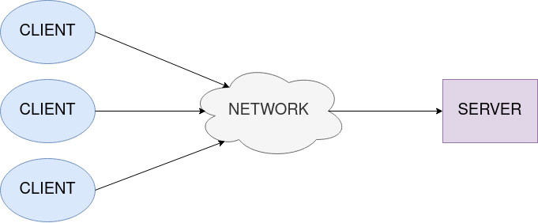

Глава 3 Веб-серверы
Введение
В этой главе будут рассмотрены основы веб-серверов, которые послужат хорошей основой
для приложения, которое мы планируем разработать в следующих главах. Мы
представим концепцию серверов, уделив особое внимание веб-серверам. После
этого мы углубимся в архитектуру REST и протоколы HTTP. В
конце главы мы объясним JSON и маршрутизацию.
Структура
В этой главе мы обсудим следующие темы:
- Серверы
- Веб-серверы
- Прокси
- REST
- HTTP
- Поток HTTP
- HTTP-сообщения
- Методы HTTP
- Дополнительные функции
- HTTP и REST
- JSON
- JSON и Go
- Routing
СЕРВЕРЫ
Сервер можно определить как программное или аппаратное обеспечение, обеспечивающее определенные
функции для других программ или устройств (клиентов). Поскольку у нас есть две
стороны в общении (клиенты и серверы), эта модель общения называется
моделью клиент-сервер.
Клиент обычно отвечает за взаимодействие с пользователем, а
сервер будет хранить и обрабатывать данные. Типичный процесс
взаимодействия клиент-сервер можно описать двумя этапами:
- Клиент отправляет сообщение (часто называемое запросом) на сервер.
- Сервер получит это сообщение, обработает его и вернет сообщение
(часто называемое ответом) клиенту.
Клиент и сервер подключены к какой-либо сети (интернет или
локальный, внутренний, сетевой). Один сервер может обслуживать несколько клиентов, а один
клиент может использовать несколько серверов. На рис. 3.1 мы можем видеть графическое
представление модели клиент-сервер.
Мы можем классифицировать серверы по назначению. Вот некоторые из наиболее распространенных
серверов:
- Серверы баз данных: обеспечивают обслуживание базы данных, поддерживают и совместно используют любую
форму базы данных.
- Серверы приложений: Хост-приложение. Клиенты могут запускать приложения
и получать доступ к ресурсам приложений через сервер приложений.
- Файловые серверы: обеспечивают общее хранилище, в котором файлы и каталоги могут
храниться и совместно использоваться клиентами.
- Почтовые серверы: предоставляют услуги для связи по электронной почте.
- Игровые серверы: размещение многопользовательских игр. Несколько клиентов (ПК
, мобильные телефоны или игровые приставки) могут одновременно
играть в игру.
- Медиа-серверы: делитесь цифровым видео- и аудиоконтентом с помощью
потоковой передачи мультимедиа.
- Веб-серверы: размещают веб-приложения (веб-сайты или веб-порталы).

Рисунок 3.1: Модель клиент-сервер
Некоторые категории пересекаются, игры и веб-приложения — это только приложения определенного
типа, поэтому игровые серверы и веб-серверы — это просто особый тип
серверов приложений. Но эти серверы слишком распространены, поэтому их вынесли в
отдельную категорию.
Что нас больше всего интересует, так это веб-серверы, потому что мы будем иметь дело с
ними в этой книге. Теперь мы более подробно рассмотрим веб-серверы.
Веб-серверы
Веб-серверы являются одним из наиболее распространенных серверов, используемых для размещения веб-
приложений. Они предоставляют все необходимые данные клиентам (в основном, веб-
браузерам), чтобы клиенты могли отображать контент (веб-сайт или веб-платформу, мы
можем использовать собирательный термин — документы).
Следующие шаги представляют собой типичный цикл обработки для веб-клиентов и
серверов:
- Клиент запрашивает HTML-страницу, и сервер возвращает
HTML-страницу. HTML (язык гипертекстовой разметки) — это язык
документов, предназначенный для отображения в веб-браузере.
- Клиент запросит таблицу стилей, а сервер вернет
файл CSS. CSS расшифровывается как каскадные таблицы стилей, язык, используемый для определения
внешний вид веб-страницы.
- Клиент запрашивает дополнительные ресурсы (изображения, видео, аудио, сценарии
и т. д.), а сервер возвращает соответствующие файлы или ссылки на эти файлы.
- Клиент будет запрашивать данные, а сервер будет получать данные из
базы данных и отправлять их клиенту (обычно в формате JSON, который будет
подробно описан позже).
- Клиент объединит полученные данные для создания и отображения
документа.
Как мы видим, часть шагов могут выполнять серверы из других
категорий. Например, сервер приложений может возвращать данные из
базы данных, или файловый сервер может обслуживать изображения. С точки зрения клиента
веб-сервер может выглядеть как единое целое, но на практике; веб-сервер представляет собой
комбинацию нескольких разных серверов (рис. 3.2).
Между клиентами и серверами мы можем поставить специальные серверы, называемые прокси. Они
могут выполнять определенные задачи и обогащать сообщения. Подробнее о них мы поговорим
в следующем разделе.
Рисунок 3.2: Веб-сервер как комбинация нескольких серверов
Современные веб-серверы используют протокол HTTP для связи и
обмена данными, поэтому мы также более подробно рассмотрим эту тему.
Часть веб-сервера, которая нас интересует и которая будет
разработана в этой книге, — это часть, которая считывает и сохраняет данные в базе данных (Шаг 4
в цикле веб-клиент-сервер). В следующих главах мы узнаем, как
получать и обрабатывать запросы от клиента и отправлять правильный ответ
Прокси
Прокси можно определить как машину, которую можно разместить между клиентом и сервером.
Существует два типа прокси:
- Прозрачный прокси просто пересылает сообщение без каких-либо
изменений.
- Непрозрачный прокси модифицирует сообщение перед его передачей./li>
Несколько действий могут быть выполнены с прокси. Вот некоторые из наиболее распространенных:
- Кэширование: сообщения, относящиеся к определенному ресурсу, будут храниться на
прокси-сервере. В следующий раз, когда этот ресурс потребуется, прокси ответит
кэшированным значением вместо сервера. Это предотвратит многократное
чтение идентичных баз данных на стороне сервера. Операции с базой данных
обычно выполняются очень медленно, поэтому это повысит производительность всего
система.
- Фильтрация: на сервер
будут пересылаться только сообщения, отвечающие определенным критериям .
Например, сервер будет принимать сообщения только из
определенной географической области, а все остальные сообщения будут отклонены.
- Балансировка нагрузки: когда представлено несколько экземпляров одних и тех же серверов
, прокси-сервер попытается переслать сообщение наименее
занятому экземпляру.
- Аутентификация:
на сервер будут пересылаться только сообщения от клиентов с соответствующими разрешениями.
- Ведение журнала: информация о сообщениях будет храниться для
восстановления связи в случае возникновения ошибок или проблем.
REST
REST (Representational State Transfer) — это архитектурный стиль программного обеспечения, используемый для описания интерфейса между различными компонентами, часто разделенными по сети. Он был разработан Роем Филдингом в 2000 году. Ресурс можно охарактеризовать как абстракцию информации в REST. Любая информация, которую мы можем идентифицировать и назвать, может считаться ресурсом (документы, изображения, услуги и т. д.). Каждый ресурс определяется его состоянием, известным как представление ресурса. Представление ресурса состоит из следующих частей:
- Данные
- Метаданные — это дополнительная информация, описывающая данные. Метаданные
могут использоваться для управления кэшированием, обнаружения ошибок передачи, согласования
соответствующий формат представления или выполнить аутентификацию.
- Гипермедийные ссылки, которые можно использовать при переходе к следующему желаемому состоянию.
Гипермедиа можно описать как концепцию, в которой сервер будет информировать клиента
о запросах, которые клиент может выполнить в будущем. Например,
сервер отправит HTML-страницу, на которой
будут доступны дополнительные операции, связанные с ресурсом, например кнопка, которая удалит ресурс.
Когда пользователь нажимает эту кнопку, будет инициирован запрос к серверу, и
фактическое представление ресурса будет удалено.
Итак, подведем итог: сервер предоставит варианты, но клиент сам выберет,
какой вариант ему нужен.
Интерфейс службы должен удовлетворять шести руководящим принципам REST и
ограничениям. Служба, отвечающая этому критерию, называется службой RESTful.
Вот шесть руководящих принципов REST:
- 1. Единый интерфейс. Чтобы заархивировать это, мы должны учесть несколько
моментов:
Идентификация ресурсов: Отдельные ресурсы, используемые во
взаимодействии между клиентом и сервером, должны быть однозначно идентифицированы.
Манипулирование ресурсами. Отдельные ресурсы должны иметь
уникальное единообразное представление на стороне сервера. Интерфейс
должен использовать это представление для изменения состояния ресурса на
сервере.
Самоописательные сообщения: каждое сообщение должно нести достаточно информации.
информацию, описывающую, как ее следует обрабатывать. Он может
дополнительно предоставлять информацию о действиях, которые клиент может
выполнять с этим ресурсом.
Гипермедиа как двигатель приложения: клиент
должен использовать только начальный URL-адрес приложения. Клиент
должен динамически использовать ссылки, предоставляемые сервером, для обнаружения и
доступа ко всем доступным ресурсам
- 2. Клиент – Сервер. Проблемы между клиентом и
сервером должны быть разделены. Клиент обрабатывает взаимодействие с пользователем, а сервер занимается хранением и манипулированием данными. Клиент — это тот, кто инициирует
общение и диктует, что будет делать с ресурсами.
Интерфейс должен быть переносимым на разные платформы, чтобы разные
типы клиентов (веб-браузеры, мобильные телефоны и т. д.) могут использовать один
и тот же сервер. Клиент и сервер со временем будут развиваться, поэтому мы должны быть
осторожны, чтобы не сломать интерфейс.
- 3. Без сохранения состояния: каждый запрос от клиента должен содержать всю необходимую
информацию, которую клиент может использовать для понимания и обработки
запроса. Сервер не может использовать информацию, предоставленную в любом
предыдущем запросе, для выполнения текущего запроса.
- 4. Кэшируемое. Сообщения, которые клиент получает от сервера, могут быть
помечены как кэшируемые или некэшируемые. Если сообщение кэшируется,
клиент может хранить его локально и повторно использовать данные для будущих эквивалентных запросов.
Данные должны храниться в течение определенного периода времени и после этого удаляться.
Каждое повторное использование может продлить этот период.
- 5. Многоуровневая система. Архитектура будет состоять из иерархических слоев,
каждый из которых будет ограничивать определенное поведение. Каждый компонент
не видит дальше непосредственного уровня, с которым он взаимодействует.
- 6. Код по требованию (необязательно). Клиент может расширить свою функциональность
, загрузив и выполнив код с сервера, обычно в виде
скриптов. Это может значительно упростить клиент: необходимо реализовать лишь небольшое количество функций, а все дополнительные функции
будет предоставлять сервер .
Методы REST используются для выполнения желаемого перехода между состояниями
любого ресурса, при этом доступ к ресурсам осуществляется через унифицированные
идентификаторы ресурсов (URI).
HTTP
HTTP (протокол передачи гипертекста) был разработан в начале девяностых годов
и представляет собой основу для любого обмена данными в сети. Он
представляет собой протокол клиент-сервер, где связь инициируется получателем
(клиентом, обычно веб-браузером).
У этого протокола есть два основных преимущества:
- он прост и удобен для чтения человеком (что мы увидим в
примерах сообщений далее в этой главе). Мы очень легко поймем, о чем
идет речь, просто проанализировав содержание сообщения.
- HTTP очень расширяем. Мы можем ввести новую функциональность,
добавив новый пользовательский заголовок или изменив семантику. Клиент и
сервер должны знать об этих изменениях. Правило того, как клиент и
сервер будет общаться, часто называют соглашением.
По умолчанию HTTP не сохраняет состояние, между двумя успешными запросами, выполненными через одно и то же соединение, нет связей
(контекст не будет использоваться совместно
между запросами). Но мы можем использовать файлы cookie (небольшие блоки данных, созданные сервером
и размещенные на клиенте) для создания сеанса с сохранением состояния. Теперь контекст
может распределяться между запросами.
Контекст можно определить как локальное хранилище, в котором могут храниться
данные, относящиеся к текущему запросу (идентификатор пользователя, данные, связанные с аутентификацией, и т. д.).
Контекст
будет удален после завершения связи, но мы видели,
что его можно запечатать и повторно использовать в дальнейших запросах.
Поток HTTP
Когда клиент хочет связаться с сервером, будут выполнены
следующие четыре шага:
- 1. TCP-соединение будет открыто и использовано для отправки и получения сообщений. Клиент может открыть новое соединение или повторно использовать существующее .
- 2. Клиент отправит сообщение на сервер.
- 3. Клиент прочитает сообщение, полученное от сервера.
- 4. TCP-соединение будет закрыто или повторно использовано для дальнейшего обмена данными.
TCP означает протокол управления передачей, один из основных протоколов обмена сообщениями по сети.
HTTP-сообщения
Существует два типа HTTP-сообщений:
- HTTP-запрос: сообщение, отправленное клиентом.
- HTTP-ответ: сообщение, отправленное сервером.
HTTP-запрос состоит из следующих элементов:
- Метод, определяющий операцию, которую клиент хочет выполнить с
ресурсом.
- Путь — это, по сути, URL-адрес без элементов, очевидных из
контекста, таких как протокол, домен или порт (URL: http://nationallibrary.org:8080/book/275, путь: book/275).
- Версия протокола HTTP.
- Заголовки, которые предоставляют серверам дополнительную информацию (
разрешения на авторизацию, формат данных, предоставляемых в теле запроса и т. д.).
- Тело (необязательно), содержащее ресурс, отправленный клиентом.
Вот упрощенный пример одного HTTP-запроса (без тела), который можно
использовать для получения информации о книге с сервера:
| Method: POST |
Path: /book/275 |
Version: HTTP/1.1 |
| Headers: |
| Content-Type: application/json |
| Accept-Language: en-US,en;q=0.5 |
| Accept-Encoding: gzip |
Ответ HTTP состоит из следующих элементов:
Версия протокола HTTP.
Код состояния, указывающий, был ли запрос успешным или нет.
Сообщение о состоянии, представляющее собой краткое описание кода состояния.
Заголовок, предоставляющий клиенту дополнительную информацию.
Тело (необязательно), содержащее ресурсы, отправленные сервером
Вот упрощенный пример одного HTTP-ответа, с помощью которого сервер
отправит клиенту информацию о книге:
| Version: HTTP/1.1 |
Status code: 200 |
Status message: OK |
| Headers: |
| Content-Type: application/json |
| Server: Apache |
| Accept-Encoding: gzip |
| Body:
{
“name”: “Alice’s Adventures in Wonderland”,
“author”:”Lewis Carroll”
} |
Методы HTTP
Методы HTTP используются в HTTP-запросах для определения того, какие операции
будут выполняться с ресурсом. HTTP определяет следующие операции:
- GET используется для получения представления запрошенного
ресурса. Не рекомендуется использовать GET для действий, которые могут изменить
состояние ресурса.
- HEAD получит тот же ответ, что и GET, но без тела.
- POST используется для отправки объекта указанного ресурса, который изменит
состояние ресурса. В основном он используется для создания новых ресурсов или обновления
существующих ресурсов.
- PUT заменит текущее представление ресурса на представление из
запроса. Мы должны использовать его, когда хотим обновить ресурс.
- DELETE, очевидно, удалит указанное представление ресурса.
- CONNECT установит туннель к серверу, указанному целевым
ресурсом.
- ОПЦИИ будут описывать варианты связи для целевого ресурса.
- TRACE выполнит проверку обратной связи сообщения на пути к
ресурсу.
- PATCH выполнит частичную модификацию ресурса. Может использоваться
, когда необходимо обновить только часть ресурса, например, когда
мы хотим обновить только пароль ресурса, который представляет
учетную запись пользователя на веб-платформе.
Коды состояния HTTP
Коды состояния используются в ответах HTTP, чтобы указать, был ли запрос
успешным или нет. Как правило, мы можем разделить коды состояния на пять
категорий, определенных стандартом:
- 1xx Информационные ответы: Сервер информирует клиента о том, что запрос
был получен с некоторым предварительным сообщением,
продолжая при этом обрабатывать запрос. Например, клиент должен отправить
запрос с большим телом сообщения, чтобы в первом сообщении
были отправлены только необходимые заголовки. Если первое сообщение было действительным, сервер
сообщит клиенту, что он может отправить следующее сообщение с телом. Итак,
мы отправим большой объем данных через сеть только в том случае, если все
Предварительные условия выполнены, и сеть не будет перегружена.
- 2xx Успешно: запрос успешно получен и обработан.
Некоторые из наиболее распространенных успешных кодов (с соответствующими
сообщениями о состоянии HTTP):
- 200 OK: запрос выполнен успешно.
- 204 Not Content: запрос выполнен успешно, но ответа
не будет .
- Перенаправление 3xx: для успешного завершения запроса необходимо выполнить дополнительные действия (клиент должен использовать другой URL, сменить прокси и т. д.).
- Ошибки клиента 4xx: запрос содержит неверный синтаксис или не может быть обработан. Некоторые из наиболее распространенных успешных кодов (с соответствующими сообщениями о состоянии HTTP):
- 400 Bad Request: Сервер не может обработать запрос из-за
недействительного запроса (необходимое поле отсутствует в теле, какое-то поле
содержит запрещенное или недопустимое значение и т. д.).
- 401 Несанкционировано: клиент должен выполнить аутентификацию перед
выполнением определенных операций, иначе будут предоставлены неверные учетные данные.
- 403 Запрещено: у клиента нет разрешения на доступ к определенным
ресурсам или выполнение определенных операций.
- 404 Not Found: запрошенный ресурс не найден сервером
.
- Ошибки сервера 5xx: серверу не удалось обработать действительный запрос:
- 500 Внутренняя ошибка сервера: наиболее распространенная ошибка сервера. На сервере
возникла ситуация, которую он не может разрешить (сервер
потеряно соединение с базой данных, невозможно связаться с другими сервисами и так
далее).
Дополнительные функции
Мы можем использовать HTTP для управления некоторыми общими функциями, связанными со
связью клиент-сервер. Вот некоторые из функций:
- Кэширование: мы можем использовать HTTP для управления тем, что будет кэшироваться и
как долго. Кроме того, мы можем явно указать поставщикам кэша игнорировать
сохраненные данные.
- Ограничение происхождения: веб-браузеры обеспечивают строгое разделение между
веб-сайтами. Только страницы одного и того же источника могут получить доступ ко всей информации
на веб-странице. Мы можем использовать HTTP, чтобы ослабить это строгое разделение на
стороне сервера, чтобы другие домены могли получить доступ к ресурсам.
- Аутентификация: некоторые ресурсы могут быть защищены, поэтому
доступ к ним могут получить только пользователи с определенными привилегиями. Базовая аутентификация может быть
предоставляется HTTP либо через заголовки, связанные с аутентификацией, либо путем
установления определенного сеанса с использованием файлов cookie.
- Сеансы: с помощью файлов cookie HTTP мы можем создать сеанс, чтобы обмениваться
контекстом посредством нескольких запросов. Это часто используется в
приложениях электронной коммерции, где содержимое корзины покупок должно
запоминаться посредством нескольких разных запросов.
HTTP и REST
REST и HTTP — это не одно и то же! REST представляет собой архитектурный стиль программного обеспечения
, используемый для проектирования системы, в которой клиент и сервер
будут обмениваться представлениями ресурсов, а HTTP представляет собой
фактический протокол, который выполняет этот обмен. HTTP — наиболее широко используемый
протокол в службах RESTful, но он не является обязательным для REST,
вместо него мы можем использовать другие протоколы.
Методы REST часто (ошибочно) связаны с методами HTTP. Никаких
рекомендаций о том, какие HTTP-методы следует использовать для
метода ресурса, нет, единственное правило — мы создаем единый интерфейс.
Если мы решим, что метод POST создаст новый ресурс, нам следует использовать
POST для создания всех ресурсов в нашей системе. В остальном
никаких дополнительных правил нет. Если нас это устраивает, мы можем использовать POST для всех операций.
JSON
JSON (нотация объектов JavaScript) можно описать как текстовый формат, который
можно использовать для хранения и транспортировки данных. Он указан Дугласом
Крокфордом и экспортирован из JavaScript.
Одним из основных преимуществ формата JSON является простота понимания
. Когда мы видим текст в формате JSON, нам сразу понятно,
какой объект представляет этот текст (пример мы увидим позже).
Кроме того, JSON не зависит от языка, хотя изначально он был разработан для
JavaScript, его поддерживают все популярные языки программирования (Go не является
исключением). Поддержка JSON логична, если учесть, что это всего лишь специальный текстовый
формат, а большинство языков программирования умеют обрабатывать текст.
Синтаксис JSON имеет несколько простых правил:
Данные представляются в виде пары имя-значение. Имя должно быть строкой,
а значение должно быть одного из следующих типов: строка, число
(целое или с плавающей запятой), объект (должен соответствовать синтаксису JSON), логическое значение, массив (любого
типа, поддерживаемого JSON) или значение NULL. Строка должна быть заключена в
двойные кавычки.
Данные разделяются запятой.
Фигурные скобки содержат объект.
Квадратные скобки содержат массив.
Интересно, что для дат нет типа. Мы должны обрабатывать их как строки.
Поскольку это всего лишь текст, JSON легко отправлять с клиента на сервер и наоборот
. Чтобы отправить его через HTTP, мы должны поместить его в тело и установить заголовок ContentType: application/json.
В следующем примере показано представление человека в
формате JSON. Данные о супруге указаны как объект, а имена детей —
в массиве:
{
“name”: “John Smith”,
“age”: 33,
“married”: true,
“spouse”: {
“name”: “Julie”,
“age”: 30
},
“children”: [
“Jack”,
“Jill”
]
}
Теперь, когда мы знакомы с форматом JSON, мы можем увидеть, как он поддерживается
языком программирования Go.
JSON и язык программирования Go
Go поддерживают JSON стандартной библиотекой через
пакет кодирования/json. Этот пакет реализует кодирование и
декодирование JSON.
Декодирование — это процесс, в котором данные JSON преобразуются и сохраняются в
структуру Go. Декодирование будет выполняться путем вызова
функции Unmarshal():
err := json.Unmarshal(b, &s)
Функция будет принимать два параметра: данные JSON ([]byte) и указатель на структуру
. Если срез байтов содержит действительный JSON, данные из него будут сохранены в
структуре, а ошибка будет равна нулю. В противном случае будет возвращена ошибка и
частично декодированные данные будут сохранены в структуре.
Следующие структуры представляют JSON из предыдущего примера:
type spouse struct {
Name string
Age int
}
type person struct {
Name string
Age int
Married bool
Spouse spouse
Children []string
}
Функция Unmarshal() успешно декодирует JSON и сопоставляет
данные JSON с полями структуры, только если имена полей структуры начинаются с Заглавная буква.
Будут декодированы только поля, которые можно найти в типе назначения. Если наш
JSON содержит, например, «pet»:»dog», эта информация будет потеряна
во время декодирования.
Если мы предположим, что переменная jsonString содержит строковое представление JSON
из нашего примера, следующий код выполнит декодирование:
var p person
err := json.Unmarshal([]byte(jsonString), &p)
if err != nil {
fmt.Println(“Failed to decode JSON”)
}
Обычно мы выполняем декодирование на стороне сервера, чтобы извлечь данные из запроса,
отправленного нас на стороне клиента.
В отличие от декодирования, кодирование — это процесс, в котором данные, хранящиеся в
структуре Go, преобразуются в JSON. Кодирование можно выполнить с помощью Marshal():
err, b := json.Marshal(&s)
Функция принимает исходную структуру. Если кодирование может быть выполнено,
будет возвращен срез байтов, содержащий JSON, а err будет иметь значение nil,
в противном случае будет возвращена ошибка. Ошибка может возникнуть в двух случаях:
указан неподдерживаемый тип (канальный, комплексный и т. д.) или когда
указаны недопустимые значения.
Следующий код закодирует переменную типа person в JSON:
jsonByte, err := json.Marshal(p)
if err != nil {
fmt.Println(“Failed to encode JSON”)
}
Кодирование будет выполняться на стороне сервера для подготовки данных для
ответа, который будет отправлен на клиентскую сторону.
Маршрутизация
Маршрутизация может быть описана как процесс, в котором будет определено, кто получит
конкретный запрос. Получатель запроса обычно называется обработчиком
и может быть определен как функция, которая будет получать и обрабатывать
запросы.
Запросы маршрутизируются на основе двух параметров:
- Метод HTTP.
- Путь запроса.
Комбинация этих двух параметров и обработчика называется маршрутом. Маршруты
обычно создаются и добавляются на веб-сервер до того, как сервер запустится
и начнет прослушивать запросы. Язык программирования Go предоставляет пару пакетов, которые можно использовать для маршрутизации; в следующих главах
мы увидим, как их использовать .
Иногда путь запроса в маршруте может содержать специальные символы, называемые
подстановочными знаками, которые можно использовать для замены одного или нескольких символов. Подстановочные знаки обычно используются для маршрутизации группы путей к одному обработчику (например,для всех операций чтения будет использоваться один обработчик).
Широко используются два подстановочных знака:
- Одна звездочка (*), которая может встречаться в любом месте пути и
представляет один полный компонент пути.
- Двойная звездочка (**) или завершающий подстановочный знак должны находиться в конце пути
и обозначают любую оставшуюся часть пути.
Следующие пути:
- /person/test/id
- /person/prod/id
Могут быть сгруппированы одной звездочкой:
/person/*/id
Или с завершающим подстановочным знаком:
/person/**
А по следующему пути мы можем направить все запросы к одному обработчику:
/**
Важно отметить, что некоторые реализации маршрутизатора поддерживают
подстановочные знаки, а некоторые нет. Мы также можем использовать их в
документации API.
Заключение
Теперь мы знакомы со всеми основами, связанными с серверами и серверными
приложениями. Мы знаем, как разработать наше решение и какие протоколы и
форматы данных широко используются. Благодаря знаниям, собранным в этой и
предыдущих главах, мы готовы начать разработку нашего веб-серверного
приложения.
В следующей главе мы, наконец, установим язык программирования Go на
наш локальный компьютер и настроим IDE (интегрированную среду разработки).
После этого мы приступим к разработке и обучению использованию стандартных и
сторонних библиотек.
Что следует помнить
- На практике веб-серверы представляют собой комбинацию различных серверов,
каждый из которых выполняет определенную задачу.
- Клиент инициирует связь и выбирает, какая операция будет
выполнена с ресурсом.
- Клиент может использовать несколько серверов, а серверы могут обслуживать несколько
клиентов.
- REST и HTTP — это не одно и то же. REST — это архитектурный стиль,
а HTTP — это протокол обмена ресурсами, часто используемый в приложениях
, разработанных в соответствии с рекомендациями REST.
- Формат JSON прост для понимания; когда мы видим текст в
формате JSON, становится ясно, какой объект представляет этот текст.